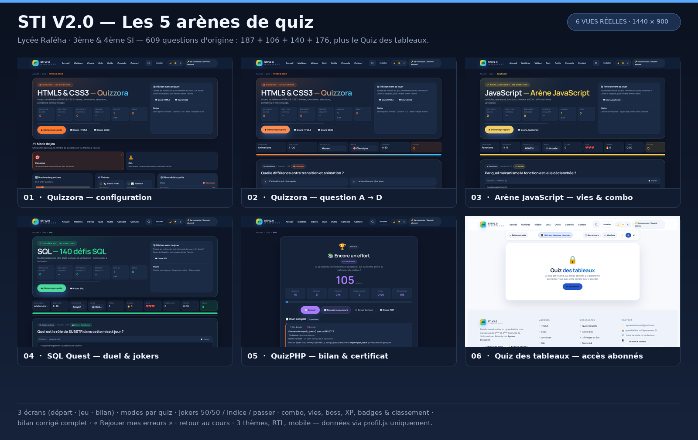

🔓 Verrou neutralisé uniquement dans cet aperçu.
tools/serveur-apercu.py remplace en mémoire acces.js,
protection.js et protection.css : aucune session Supabase n'est
nécessaire. Les fichiers du dépôt restent inchangés ; le Quiz des tableaux
affiche donc son écran « réservé aux abonnés » puisque le verrou métier du quiz reste actif.
Les cinq arènes
Liens relatifs : valables sur l'hôte de prévisualisation Arena comme en local.
Planche récapitulative
Six vues réelles capturées dans Chromium headless (1440 × 900).
